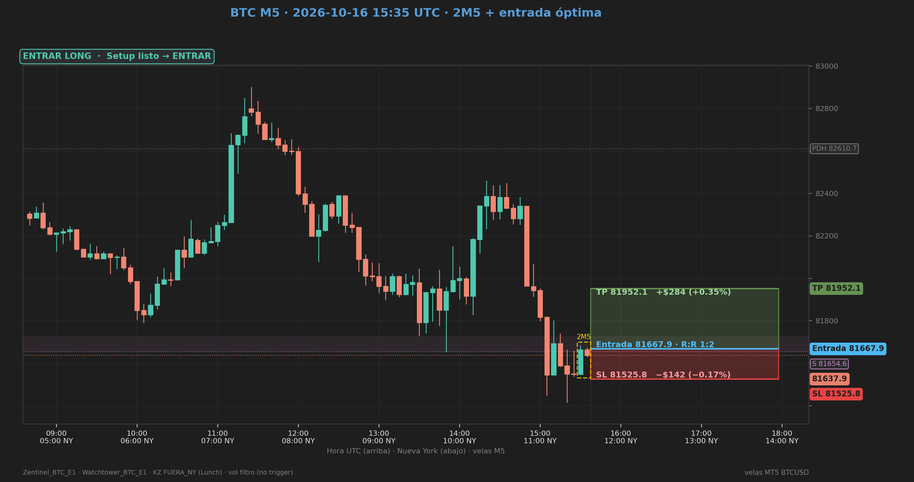

| Precio | 81609.4 |
|---|---|
| Veredicto | Entrar (LONG) |
| Entrada óptima | 81586.9 |
| ICT | 81599.2→81586.9 · Refinada 81599.2→81586.9 (FVG BULLISH edge) · Sweep swing_high @ 81739.9 + reclaim · PD DISCOUNT · H1 PENDING_BULL |
| Plan | Entry 81586.9 · SL 81508.6 · TP 81743.6 |
| E2 / Break | BREAK / E1 — Sin reversión E2 — E1 primario |
| Métricas | Rules 83% · Neural 65% · ML 81.3% · Confluencia MEDIA — 50% · Rules 83%; Neural gated 60% (medium); ML 81% (high); 2M5 no listo; Break operable |
| Historial ref | btc-098 · 2026-10-14 16:31 NY · Entry 81814.1 · BUENA — precio cerca de Entry actual + zona OK · (MÁS CERCA) · Δ Entry -227.2 pts (-0.278%) · precio→última 204.7 pts (0.250%) · precio→actual 22.5 pts (0.028%) |
| Bando usado (lado asumido) | BULLISH |
| Bando mercado (H1) | BEARISH |
| R:R | 1:2 |
| Dist. a Entry | -22.5 pts (0.028%) |
| Dist. a SL | -100.9 pts (0.124%) |
| Dist. a TP | +134.2 pts (0.164%) |
| Riesgo (pts) | 78.4 |
| Winrate setup | ~57% — calibrado walk-forward BTC E1 · 80%: 51–62% · n=2097 (n_eff 755) · EV +0.64R |
| Zona PD vs dirección | LONG en DISCOUNT +2 (zona a favor) |
| Bias vs dirección | H1 BEARISH vs LONG -6 |
| Score Rules extendido | 90% |
| Estado 2M5 | Sin 2M5 (info, no gate) |
| Bias H1 vs bando | H1 BEARISH · CLI BULLISH |
| Calidad break/reverse | BREAK (continuación E1) |
| Neural grade/conf | B · conf. medium · 65% WIN |
| Rules E1 detalle | 5/6 (83%) |
| Vol Zentinel (filtro) | muy_bajo · 0.15× · Zentinel_BTC_E1 |
| MACD-quant (filtro) | en contra · Hist -168.1 · never trigger |
| Watchtower KZ | FUERA_NY · Watchtower_BTC_E1 |
| Chart | Preview en navegador |
